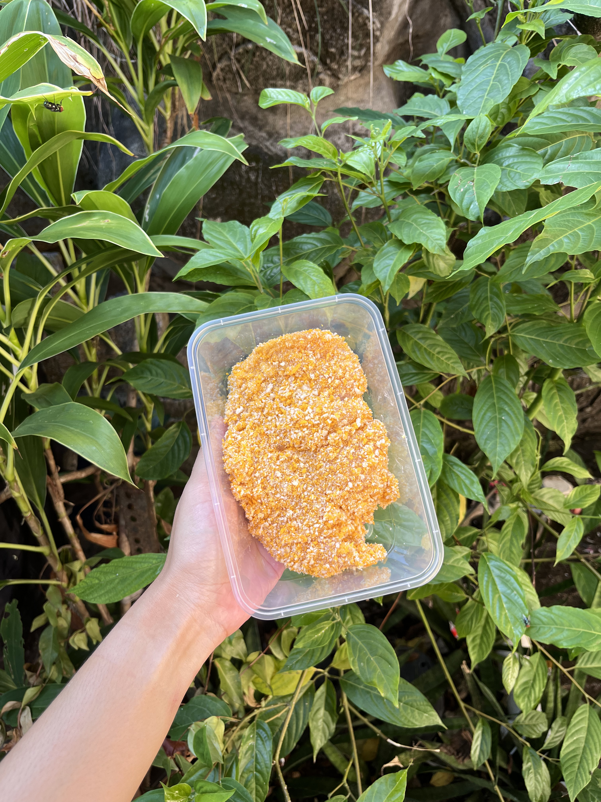
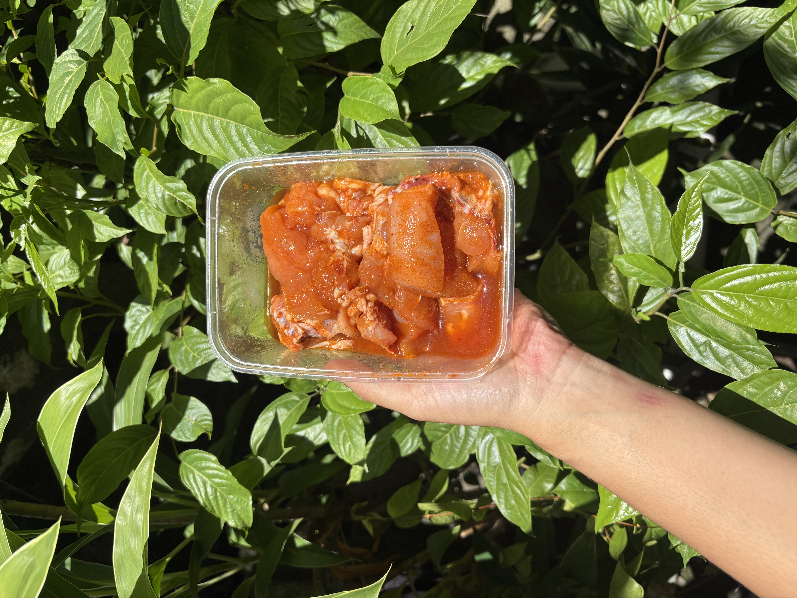
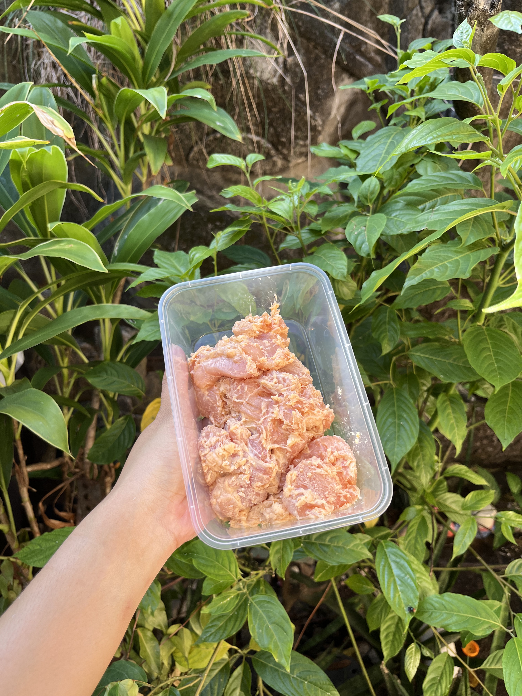

Fresh, Praktis, Hemat Waktu
Nikmati ayam berkualitas dengan bumbu autentik yang sudah dimarinasi sempurna. Tinggal masak, sajikan, dan nikmati cita rasa restoran di rumah sendiri.
Varian pilihan yang sudah dimarinasi dengan resep terbaik kami

Ayam dengan balutan tepung khas katsu yang menghasilkan tekstur crispy dan gurih saat digoreng, cocok untuk menu praktis sehari-hari.

Ayam dengan racikan bumbu gurih sederhana yang meresap ke dalam daging dan cocok diolah menjadi berbagai menu favorit.

Ayam dengan racikan bumbu original dan lapisan tepung siap goreng yang praktis dimasak dengan hasil renyah di luar.
Hubungi kami langsung. Pilih varian dan jumlah pesananmu dengan mudah.
Ayam segar dimarinasi dan dikemas dalam kondisi fresh dan higienis.
Terima pesananmu, langsung masak sesuai selera, sajikan untuk keluarga.
Kami menggunakan ayam segar yang berkualitas. Tidak menggunakan ayam beku atau lama!
Semua bumbu dibuat dari rempah asli rempah tanpa MSG berlebihan dan tanpa bahan pengawet.
Proses marinasi yang memakan waktu sudah kami lakukan. Kamu tinggal masak dan menikmatinya.
Seluruh produk kami dipastikan halal, aman, dan sesuai untuk dikonsumsi keluarga.
Pesan sekarang dan rasakan perbedaan ayam marinasi Racik Rasa di meja makanmu hari ini.